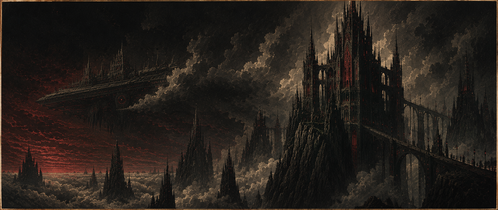
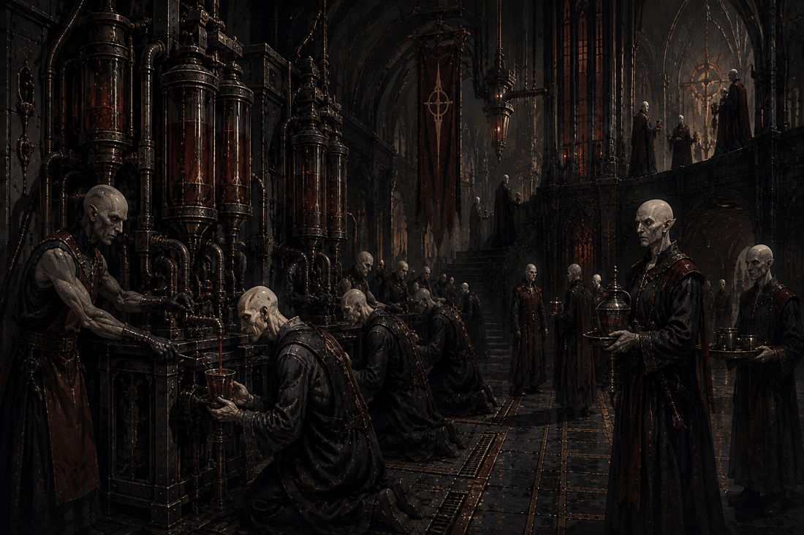
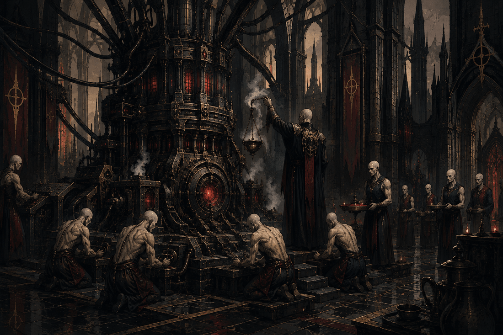
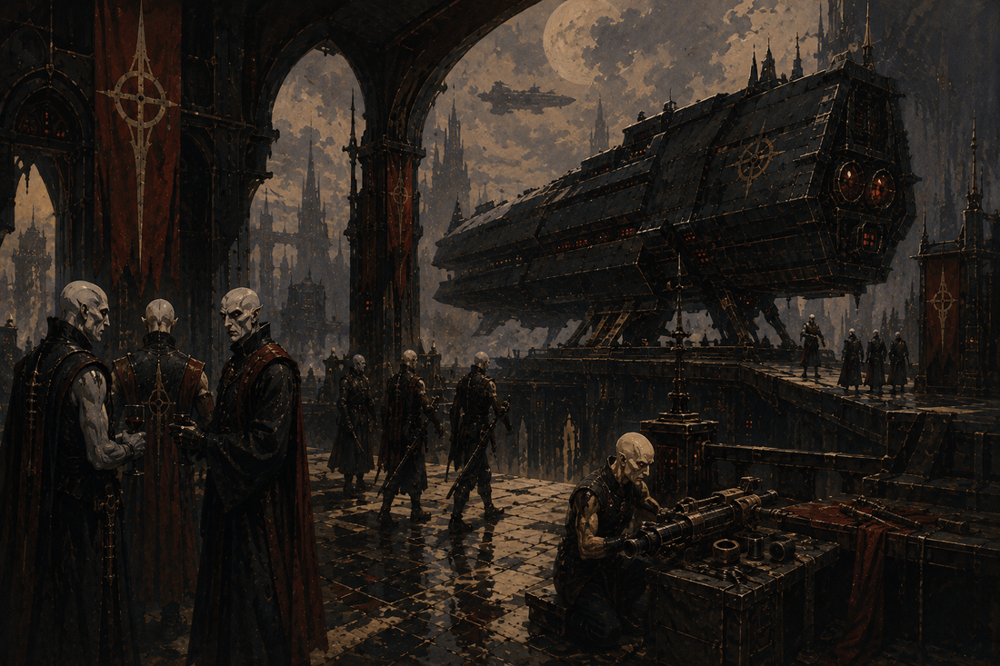
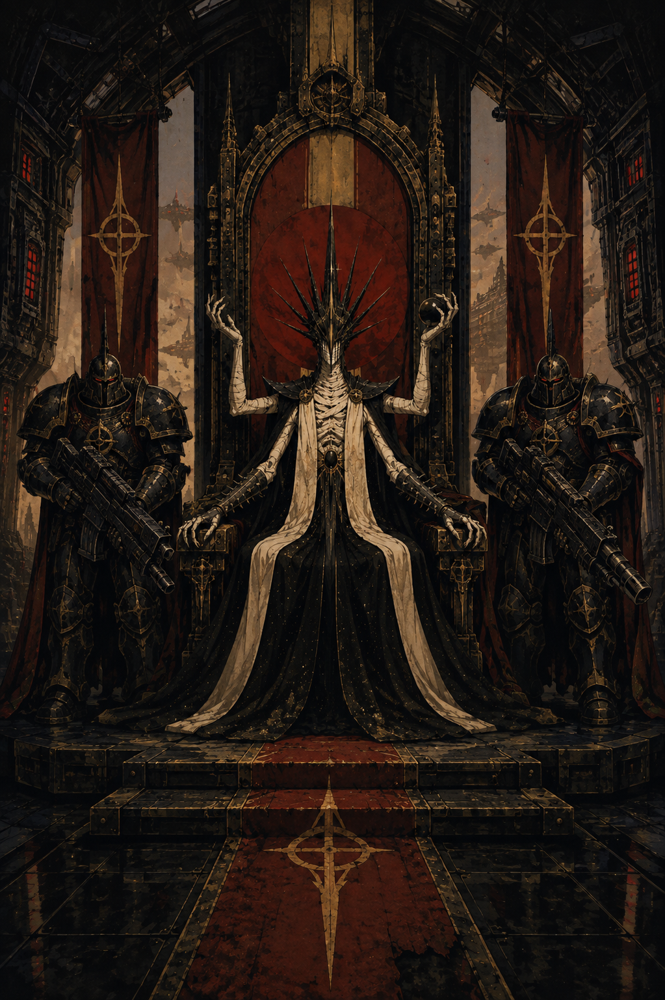

01 / 06 · Herrschende Klasse · Nyxar
Nyxaren
Glaube ist Macht. Blut ist Ordnung. Technik ist Sakrament.
Übersicht

Angefangen hat alles auf der Erde. Das vergessen selbst viele Nyxaren gern, oder verdrängen es zumindest. Vor Jahrhunderten verlor eine religiös-ideologische Gruppierung — der Orden der Dunklen Mutter — einen erbitterten Konflikt gegen die technokratische Fraktion der Menschheit, den Pakt der Weite. Die Strafe: Verbannung, ins All hinaus, ohne Rückweg. Auf Nyxar landeten sie schließlich — einer lebensfeindlichen Welt, permanent verhangen von schweren Gewitterwolken. Ein klarer Himmel dort gilt fast als religiöses Ereignis. Über Generationen wurde aus den Verbannten das, was man heute Nyxaren nennt.
Um ihre menschliche Abstammung wissen sie durchaus. Als Menschen verstehen sie sich trotzdem längst nicht mehr — dafür sitzt der Groll gegen die einst zurückgelassene Menschheit zu tief, über Jahrhunderte weitergereicht wie eine Familienwunde. „Vampir" übrigens? Eine menschliche Fremdbezeichnung. Manche Nyxaren nehmen sie als Beleidigung, andere zucken nur mit den Schultern — ein exotisches Kuriosum menschlicher Kultur, mehr nicht.
Was an ihnen wirklich „vampirisch" wirkt, ist keine Legende, sondern schlicht Biologie: fahle Haut, Haarausfall, geschärfte Zähne — und eine Abhängigkeit von Blut, ohne die nichts geht. Dabei ist Blut weit mehr als Nahrung, es ist Sakrament. Synthetisches Blut hält am Leben, sättigt den Körper. Aber die Seele? Die verlangt nach echtem Blut, und genau das macht es zum ultimativen Statussymbol — sichtbar, unübersehbar, ein Klassenunterschied, der sich buchstäblich schmecken lässt.
Religion

Der Glaube der Nyxaren läuft auf zwei Gleisen gleichzeitig. Die Dunkle Mutter ist der ferne, mythische Ursprung — ein Nationalmythos, der beim Krönungsritual „Erstes Blut“ feierlich beschworen wird, im Alltag aber kaum eine Rolle spielt. Wichtiger ist, was man wirklich lebt: die Verehrung der Maschinengeister, betreut von einer eigenen Priesterschaft, den Techpriestern.
Klingt nach zwei getrennten Religionen? Theologisch ist es nur eine, mit zwei Gesichtern. Dieselbe Kraft, die einst das Blut der Dunklen Mutter durch Fleisch trug, so die Lehre, drückt sich heute eben durch Metall und Schaltkreis aus.
Und der Imperator? Der gilt als lebender Gott — gleich auf zwei Wegen legitimiert. Zum einen durch seine Blutlinie, zum anderen als Sprachrohr des mächtigsten bekannten Maschinengeistes, der tief in der uralten Thronkathedrale des Hauses Voss'thane haust. Diese doppelte Absicherung macht ihn praktisch unangreifbar. Am Ende bleibt: eine Theokratie, notdürftig als feudales System getarnt.
Gesellschaft & Alltag
Gebet, Pflicht, Dienst am Gottimperator — mehr Alltag bleibt den meisten einfachen Nyxaren nicht übrig. Eine zutiefst hierarchische, kriegerische Gesellschaft eben. Fast jeder gehört einem der fünf Häuser an, wenn auch meist ganz unten in der Hierarchie, als niederer Diener. Wer zu keinem Haus zählt? Der landet auf den Blutfarmen.
Bei der Bildung zeigt sich der Klassenunterschied besonders deutlich. Die großen Häuser unterhalten eigene Kathedralakademien; die Ausbildung zum Techpriester dagegen ist ein eigener, hart umkämpfter Pfad — immerhin unabhängig vom Hausrang zugänglich, das muss man ihnen lassen. Blutfarm-Diener hingegen? Bekommen so gut wie keine formale Bildung. Militärisch ausgebildet wird trotzdem praktisch jeder, denn die ganze Gesellschaft tickt kriegerisch, bis in die untersten Ränge hinein.
Und Liebe? Die spielt innerhalb der fünf Häuser höchstens eine Nebenrolle. Ehen sind Bündnisse, kalt kalkuliert, strategisch verhandelt — Zugang zu echtem statt synthetischem Blut fungiert dabei als Verhandlungsmasse und Statussymbol zugleich. Unter Hochadel sind enge Verwandtenehen zur Bewahrung „reiner“ Blutlinien fast schon Norm. Niedere Diener dagegen heiraten pragmatisch, nicht strategisch — wozu auch Politik betreiben, wenn man ohnehin kein Erbe zu verteidigen hat.
Militär

Strategisch. Geduldig. Fast beiläufig grausam. Wer sich für praktisch unsterblich hält, hat es nicht eilig — die Nyxaren setzen deshalb selten auf die schnelle Entscheidungsschlacht, sondern lieber auf Belagerung, Zermürbung, psychologische Kriegsführung. Zeit spielt für sie, nicht gegen sie.
Die reguläre Kampftruppe stellt die Blutgarde — gezüchtete, dämonisch anmutende Kampfmaschinen, das Ergebnis derselben blutgebundenen Wissenschaft, die auch den Rest des Volkes prägt. Darüber, als persönliche Elitetruppe des Imperators, stehen die Inquisitoren: militärische Speerspitze und Glaubenswächter in einem.
Im Nahkampf dominieren schwere Zweihandwaffen — kein filigranes Fechten, sondern brachiale, zermalmende Gewalt. Und ihre Flotte? Wenige Schiffe, dafür gewaltig, im Kathedralen-Stil gehalten. Qualität statt Masse, Ehrfurcht statt Zahlenspiel.
Sprache & Namen
Die nyxarische Sprache klingt nach Mittelhochdeutsch, ein wenig archaisch, ein wenig feierlich — im eigentlichen Spiel spielt sie aber kaum eine Rolle. Warum auch? Die implantierte Übersetzungstechnologie Zungenweihe, ursprünglich eine Erfindung der Nyxaren selbst, sorgt dafür, dass jedes Volk jedes andere versteht.
Namen folgen einem klaren Muster: Vorname plus Hausname, altdeutsch-gotisch im Klang — Wulfric, Adalher, Sigmund, Brunhild, Isolde, dazwischen düstere Kunstnamen wie Malachai. Echte Bluts- und Hausmitglieder tragen den vollen, geadelten Namen mit Apostroph, also Voss'thane. Niedere Diener bekommen nur die vereinfachte Form ohne Apostroph, schlicht Voss. Ein einziger Apostroph, und man weiß sofort, wo jemand in der Hierarchie steht.
Die fünf Häuser
Seit Jahrhunderten stellt ein einziges Haus ununterbrochen jeden Imperator: Voss'thane. Vier weitere Häuser kamen erst später hinzu, entstanden direkt auf Nyxar. Zusammen bilden alle fünf den Hohen Rat — ein rein Nyxaren-internes Gremium, nicht zu verwechseln mit dem galaxieweiten Dominat.
Voss'thane
Das Kaiserhaus. Vereinigung aller vier Domänen — Krieg, Tod, Wissen, Schatten.
- Blutrecht des Throns — einmal pro Sitzung eine Order erteilen, der niedere Diener nicht widersprechen können.
- Erstes Blut — Wunden heilen im Ruhezustand geringfügig schneller.
Amaris
Kinder des Mondes. Flotten und Eroberung; befehligten historisch die großen Feldzüge.
- Flottentaktik — Bonus auf Manöver in Raumgefechten.
- Kalte Entschlossenheit — Resistenz gegen Einschüchterung im Kampf.
Morana
Kinder des Todes. Blut und Tod; kontrollieren die Blutfarmen, wachen über Ketzerei.
- Blutgespür — echtes Blut in der Nähe erkennen.
- Scharfrichterblick — Bonus bei der Einschätzung von Schwäche eines Gegners.
Lucius
Kinder des Lichts. Wissen, Lehre und Diplomatie; vertreten das Reich nach außen.
- Lehrmeisterwissen — Bonus auf Wissen bei religiösen/historischen Fragen.
- Silberzunge des Hofes — Bonus auf Überzeugung gegenüber Adel.
Lilith
Kinder der Nacht. Schatten und Geheimdienst; Spionage, verdeckte Operationen.
- Schattenpfad — Bonus auf Heimlichkeit in Innenräumen.
- Ohren an der Wand — erfährt früher von Gerüchten/Intrigen am Ort.
Schlüsselfigur: Malachai Voss'thane, Imperator des Dominat

Seit ~185 n.Z. im Amt — macht rund 155 Jahre. Klingt unmöglich? Ist es nicht, jedenfalls nicht für einen Nyxaren: Nach Erreichen der Reife altern sie kaum noch. Malachai hat die gesamte Pax Nyxarum also nicht nur erlebt, sondern selbst geformt.
Kein lauter Tyrann, eher ein kalter, unerschütterlich geduldiger Stratege. Was für andere Wochen sind, sind für ihn Jahrzehnte — er kann es sich leisten zu warten. Die fünf Häuser hält er in ständiger, fein austarierter Rivalität gegeneinander, ein Meister der leisen Manipulation. Sein Glaube an das eigene göttliche Mandat? Absolut. Aber unaufgeregt, fast beiläufig, als müsse er niemandem mehr etwas beweisen.
Der eine ernsthafte Riss in seiner sonst makellosen Regentschaft: die Lykaner-Rebellion. Seine Antwort darauf — die Erschaffung der Orks aus menschlichem Genpol — verrät mehr über ihn als jede Zeremonie es könnte. Prinzipien? Zweitrangig. Der Erhalt der Macht geht vor, immer.
Spielhaken: Offiziell haben sich die Nyxaren vollständig von „Mensch“ gelöst, so die Lehre. Trotzdem bewahrt Malachai persönlich eine Reliquie aus der Zeit der Verbannung auf — ein Fragment eines der ursprünglichen Archen-Schiffe. Ein kleiner, nie erwähnter Widerspruch. Niemand außerhalb seines engsten Kreises weiß überhaupt davon.
Blick nach außen
Überlegen — so sehen sich die Nyxaren, ganz grundsätzlich. Im Detail aber unterscheidet sich diese Überlegenheit spürbar je nach Volk. Terraner: Verachtung, ohne jede Gleichberechtigung — und doch bleibt menschliches Blut das Kostbarste überhaupt, ein Widerspruch, mit dem man einfach lebt. Orks: ursprünglich ein fehlgeschlagenes Experiment, dem man nach der Rebellion Rechte zugestand. Respektiert als Krieger, immerhin.
Aeldir: das einzige Volk, das man fast auf Augenhöhe sieht. Stolz erkennt eben Stolz — der Respekt bleibt trotzdem distanziert, nie herzlich. Prometheaner: ein unbehagliches Verhältnis. Ihre nüchterne, entzauberte Haltung zu allem Maschinenbewussten wirkt auf gläubige Nyxaren fast wie stille Blasphemie. Und die Lykaner? Feindselig, schlicht und einfach. Der Frieden nach der Rebellion bleibt bis heute brüchig — kaum mehr als ein Waffenstillstand mit Ablaufdatum.